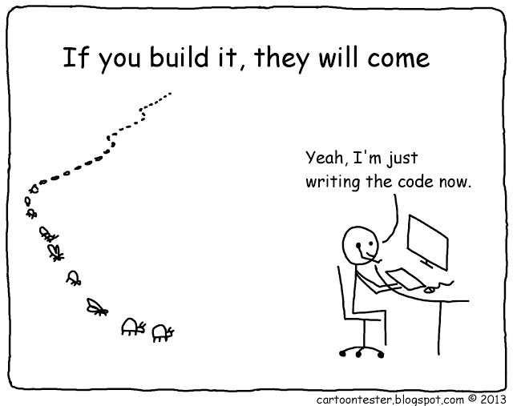

00. Link - JavaScript—Map vs. ForEach
01. Link - Introducing Nexus.js: A multi-threaded JavaScript run-time
02. Link - Node.js meets OpenCV’s Deep Neural Networks—Fun with Tensorflow and Caffe
03. Link - Speed up Your Node.js App with Native Addons
04. Link - Walt is a JavaScript-like syntax for WebAssembly text format
05. Link - Go or Not to Go (from a JavaScript Perspective)?
06. Link - Functional programming in Javascript is an antipattern
07. Link - Functional Programming In JavaScript—With Practical Examples (Part 1)
08. Link - A curated list of awesome functional programming stuff in js
